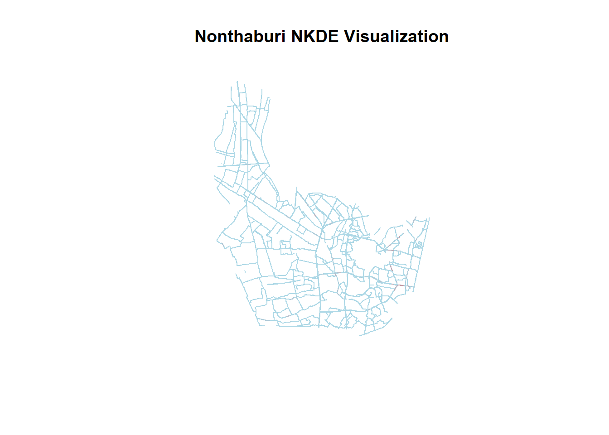
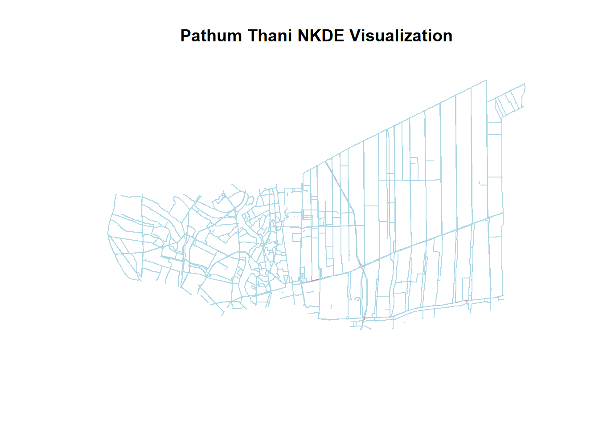
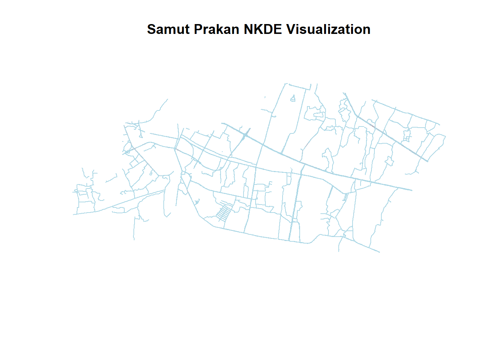
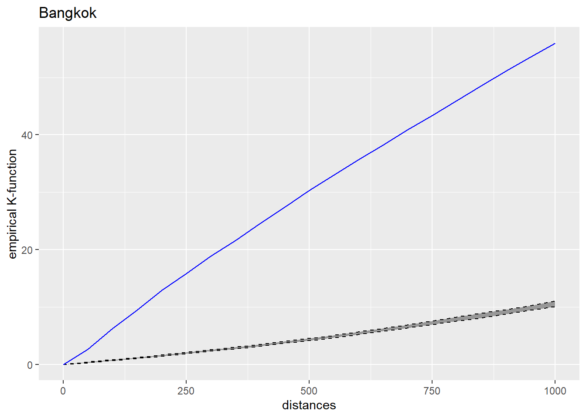

set.seed(1234)
pacman::p_load(sf,raster,spatstat,tmap,tidyverse,sp,maptools,spNetwork)Take-home Exercise 1: Geospatial Analytics for Public Good
1 Overview
Thailand’s roads are the deadliest in Southeast Asia and among the worst in the world, according to the World Health Organisation. About 20,000 people die in road accidents each year, or about 56 deaths a day (WHO).
2 Getting Started
2.1 Objectives
In view of this, we need discover factors affecting road traffic accidents in the Bangkok Metropolitan Region BMR by employing both spatial spatio-temporal point patterns analysis methods.
The specific objectives of this take-home exercise are as follows:
To visualize the spatio-temporal dynamics of road traffic accidents in BMR using appropriate statistical graphics and geovisualization methods.
To conduct detailed spatial analysis of road traffic accidents using appropriate Network Spatial Point Patterns Analysis methods.
To conduct detailed spatio-temporal analysis of road traffic accidents using appropriate Temporal Network Spatial Point Patterns Analysis methods.
2.2 The Study Area
The focus of this study would in the Bangkok Metropolitan Region BMR, which includes the provinces:
Bangkok
Nonthaburi
Nakhon Pathom
Pathum Thani
Samut Prakan
Samut Sakhon
3 Data Preparation
3.1 Geospatial
These data sets are in shp format
- Thailand Roads, available publicly from HDX
- Thailand - Subnational Administrative Boundaries, available publicly from HDX
This data sets are in csv format
- Thailand Road Accident [2019-2022], available publicly from Kaggle
4 Data Wrangling
4.1 Thailand Road Accident 2019-2022
4.1.1 Importing Attribute Data into R
We will import thai_road_accident_2019_2022.csv file into RStudio and save the file into an R dataframe called rdacc
rdacc <- read_csv("C:/ngmengye/ISSS626-GAA/Take-home_Ex/Take-home_Ex01/data/aspatial/thai_road_accident_2019_2022.csv")Rows: 81735 Columns: 18
── Column specification ────────────────────────────────────────────────────────
Delimiter: ","
chr (10): province_th, province_en, agency, route, vehicle_type, presumed_c...
dbl (6): acc_code, number_of_vehicles_involved, number_of_fatalities, numb...
dttm (2): incident_datetime, report_datetime
ℹ Use `spec()` to retrieve the full column specification for this data.
ℹ Specify the column types or set `show_col_types = FALSE` to quiet this message.4.1.2 Filtering missing values
To define the geometry of each point, we need to use the latitude and longitude coordinates. Before converting the data frame to an sf object, we need to ensure that there are no missing values in the latitude and longitude columns.
Since only 359 out of 81,735 rows have missing values, it is reasonable to remove them.
lat_na <- sum(is.na(rdacc$latitude))
long_na <- sum(is.na(rdacc$longitude))
total_rows <- nrow(rdacc)
lat_na_pct <- (lat_na / total_rows) * 100
long_na_pct <- (long_na / total_rows) * 100
cat("Missing values in Latitude:", lat_na, "(", round(lat_na_pct, 2), "% )\n")Missing values in Latitude: 359 ( 0.44 % )cat("Missing values in Longitude:", long_na, "(", round(long_na_pct, 2), "% )\n")Missing values in Longitude: 359 ( 0.44 % )4.1.3 Creating a simple feature data frame from an aspatial data frame
The code chunk below converts rdacc data frame into a simple feature data frame by using st_as_st() of sf packages
rdacc_sf <- rdacc %>%
filter(!is.na(longitude) & longitude != "",
!is.na(latitude)& latitude != "") %>%
st_as_sf(coords = c(
"longitude", "latitude"),
crs = 4326) %>%
st_transform(crs = 32647)The code chunk below shows that there are 81376 observations in rdacc_sf
nrow(rdacc_sf)[1] 81376To reduce the computational load and improve code execution speed, we should filter the rdacc_sf data to include only cases where the weather condition is clear and the accident type is rear-end collision.
A high frequency of rear-end collisions under clear conditions may indicate potential issues with road design, traffic signal timing, or congestion, rather than being caused by weather-related factors.
rdacc_sf_2 <- rdacc_sf[rdacc_sf$weather_condition == "clear" & rdacc_sf$accident_type == "rear-end collision", ]
4.2 Correcting the projection
EPSG: 4326 is wgs84 Geographic Coordinate System and EPSG: 32647 refers to the WGS 84 / UTM zone 47N Projected Coordinate System, which is specifically used for areas in Thailand.
4.2.1 Plotting the Aspatial Data
We use st_geometry to display basic information of the feature class such as type of geometry. It looks like the plot is showing points scattered across a wide area, which suggests that your data includes locations outside the Bangkok Metropolitan Region (BMR).
plot(st_geometry(rdacc_sf_2))To focus only on data within the BMR, we need to filter the dataset for coordinates that fall within the region.
rdacc_bmr_sf <- rdacc_sf_2 %>%
filter(province_en %in% c("Bangkok", "Nonthaburi", "Nakhon Pathom", "Pathum Thani", "Samut Prakan", "Samut Sakhon"))Our plot now shows road accident points within the Bangkok Metropolitan Region (BMR) overlaid on the road network. This looks much better than the previous scattered points across a broader region.
plot(st_geometry(rdacc_bmr_sf))4.3 Thailand Roads
4.3.1 Importing Geospatial Data
We will import hotosm_tha_roads_lines shapefile into RStudio as sf data frames.
network <- st_read(dsn="C:/ngmengye/ISSS626-GAA/Take-home_Ex/Take-home_Ex01/data/geospatial",
layer="hotosm_tha_roads_lines_shp")Reading layer `hotosm_tha_roads_lines_shp' from data source
`C:\ngmengye\ISSS626-GAA\Take-home_Ex\Take-home_Ex01\data\geospatial'
using driver `ESRI Shapefile'
Simple feature collection with 2792590 features and 14 fields
Geometry type: MULTILINESTRING
Dimension: XY
Bounding box: xmin: 97.34457 ymin: 5.643645 xmax: 105.6528 ymax: 20.47168
CRS: NAThe Coordinate Reference System, CRS is showing NA. Without a CRS, it’s unclear how the coordinates relate to the earth, which can lead to errors when performing spatial analysis.
Set the CRS of network to WGS 84 (EPSG: 4326).
network <- st_set_crs(network, 4326)Transform the CRS of network to UTM Zone 47N (EPSG: 32647).
network32647 <- st_transform(network,32647)st_geometry(network32647)Geometry set for 2792590 features
Geometry type: MULTILINESTRING
Dimension: XY
Bounding box: xmin: 325313.7 ymin: 624248.4 xmax: 1215576 ymax: 2263968
Projected CRS: WGS 84 / UTM zone 47N
First 5 geometries:MULTILINESTRING ((693686.1 1519792, 693669.9 15...MULTILINESTRING ((693358 1519300, 693298.9 1519...MULTILINESTRING ((692949.1 1518860, 693039.6 15...MULTILINESTRING ((693256 1519184, 693240.4 1519...MULTILINESTRING ((692810.8 1518630, 692853.4 15...The code chunk above indicates network32647 with CRS: WGS 84 / UTM zone 47N.
There are 2792590 observations, let’s check what the highway types available in the network32647.
unique_values <- unique(network32647$highway)
print(unique_values) [1] "secondary" "residential" "secondary_link" "service"
[5] "tertiary" "path" "footway" "track"
[9] "unclassified" "trunk" "trunk_link" "primary"
[13] "primary_link" "steps" "motorway_link" "cycleway"
[17] "pedestrian" "tertiary_link" "motorway" "construction"
[21] "road" "raceway" "corridor" "living_street"
[25] "escape" "proposed" "busway" "bridleway"
[29] "abandoned" "parth" "barrier" "paved" According to Highway classification on WikiProject Thailand, we should only include intercity roads:
1 secondary
2 tertiary
3 trunk
4 primary
5 motorway
6 unclassified
Filter network32647 data accordingly into a new dataset filtered_network
highway_types <- c(
"secondary", "tertiary","trunk", "primary", "motorway", "unclassified"
)
filtered_network <- network32647 %>%
filter(highway %in% highway_types)The filtered_network now has 203029 observations.
nrow(filtered_network)[1] 2030294.4 Thailand - Subnational Administrative Boundaries
4.4.1 Importing Geospatial Data
Thailand administrative level 0 (country), 1 (province), 2 (district), and 3 (sub-district, tambon) boundaries. Since we focus on Bangkok Metropolitan Region, we should import level 1 (province) data. We will import tha_admbnda_adm1_rtsd_20220121 shapefile into RStudio as sf data frames.
thai_map <- st_read(dsn="C:/ngmengye/ISSS626-GAA/Take-home_Ex/Take-home_Ex01/data/geospatial",
layer="tha_admbnda_adm1_rtsd_20220121")Reading layer `tha_admbnda_adm1_rtsd_20220121' from data source
`C:\ngmengye\ISSS626-GAA\Take-home_Ex\Take-home_Ex01\data\geospatial'
using driver `ESRI Shapefile'
Simple feature collection with 77 features and 16 fields
Geometry type: MULTIPOLYGON
Dimension: XY
Bounding box: xmin: 97.34336 ymin: 5.613038 xmax: 105.637 ymax: 20.46507
Geodetic CRS: WGS 84Transform CRS of thai_map to UTM Zone 47N (EPSG: 32647) as dataset thai_map_32647.
thai_map_32647 <- st_transform(thai_map, crs = 32647)thai_map_32647 shows projected CRS: WGS 84 / UTM zone 47N, same as filtered_network.
st_geometry(thai_map_32647)Geometry set for 77 features
Geometry type: MULTIPOLYGON
Dimension: XY
Bounding box: xmin: 325178.8 ymin: 620860.6 xmax: 1213656 ymax: 2263241
Projected CRS: WGS 84 / UTM zone 47N
First 5 geometries:MULTIPOLYGON (((674339.8 1543300, 674382.3 1543...MULTIPOLYGON (((687139.8 1517113, 687147.1 1517...MULTIPOLYGON (((644817.9 1559286, 644817.5 1559...MULTIPOLYGON (((704086 1575736, 704089.9 157550...MULTIPOLYGON (((662941.6 1620856, 662957.5 1620...The thai_map_32647 dataset covers the entire Thailand region.
For this study, we are specifically focusing on the Bangkok Metropolitan Region (BMR). Accordingly, we will filter the dataset to include only the BMR area.”
thaiBMR <- thai_map_32647 %>%
filter(ADM1_EN %in% c("Bangkok", "Nonthaburi", "Nakhon Pathom", "Pathum Thani", "Samut Prakan", "Samut Sakhon"))ThaiBMR dataset only consists of the 6 provinces in BMR.
thaiBMRSimple feature collection with 6 features and 16 fields
Geometry type: MULTIPOLYGON
Dimension: XY
Bounding box: xmin: 587893.5 ymin: 1484414 xmax: 712440.5 ymax: 1579076
Projected CRS: WGS 84 / UTM zone 47N
Shape_Leng Shape_Area ADM1_EN ADM1_TH ADM1_PCODE ADM1_REF
1 2.417227 0.13133873 Bangkok กรุงเทพมหานคร TH10 <NA>
2 1.695100 0.07926199 Samut Prakan สมุทรปราการ TH11 <NA>
3 1.251111 0.05323766 Nonthaburi นนทบุรี TH12 <NA>
4 1.884945 0.12698345 Pathum Thani ปทุมธานี TH13 <NA>
5 2.463030 0.17891420 Nakhon Pathom นครปฐม TH73 <NA>
6 1.566369 0.07155983 Samut Sakhon สมุทรสาคร TH74 <NA>
ADM1ALT1EN ADM1ALT2EN ADM1ALT1TH ADM1ALT2TH ADM0_EN ADM0_TH ADM0_PCODE
1 <NA> <NA> <NA> <NA> Thailand ประเทศไทย TH
2 <NA> <NA> <NA> <NA> Thailand ประเทศไทย TH
3 <NA> <NA> <NA> <NA> Thailand ประเทศไทย TH
4 <NA> <NA> <NA> <NA> Thailand ประเทศไทย TH
5 <NA> <NA> <NA> <NA> Thailand ประเทศไทย TH
6 <NA> <NA> <NA> <NA> Thailand ประเทศไทย TH
date validOn validTo geometry
1 2019-02-18 2022-01-22 -001-11-30 MULTIPOLYGON (((674339.8 15...
2 2019-02-18 2022-01-22 -001-11-30 MULTIPOLYGON (((687139.8 15...
3 2019-02-18 2022-01-22 -001-11-30 MULTIPOLYGON (((644817.9 15...
4 2019-02-18 2022-01-22 -001-11-30 MULTIPOLYGON (((704086 1575...
5 2019-02-18 2022-01-22 -001-11-30 MULTIPOLYGON (((631987.6 15...
6 2019-02-18 2022-01-22 -001-11-30 MULTIPOLYGON (((641549.1 15...4.4.2 Visualizing the Geospatial Data
We will visual the distribution of road accidents in BMR below using the datasets thaiBMR and rdacc_bmr_sf.
plot(st_geometry(thaiBMR), col = "lightblue", main = "BMR with Road Accidents")
plot(rdacc_bmr_sf$geometry, col = "red", pch = 19, add = TRUE)The filtered_network dataset covers all Thailand region. We can use st_intersection() function to find the geometric intersection of thaiBMR. The new dataset will be BMR_network that only consists BMR networks.
BMR_network <- st_intersection(filtered_network,thaiBMR)The BMR_network consists of 26725 observations.
st_geometry(BMR_network)Geometry set for 26725 features
Geometry type: GEOMETRY
Dimension: XY
Bounding box: xmin: 590124.8 ymin: 1484506 xmax: 712235 ymax: 1579041
Projected CRS: WGS 84 / UTM zone 47N
First 5 geometries:LINESTRING (693686.1 1519792, 693669.9 1519740,...LINESTRING (692810.8 1518630, 692853.4 1518630,...LINESTRING (668360.2 1522450, 668339 1522391, 6...LINESTRING (667716.6 1522782, 667687.5 1522728,...LINESTRING (667485.1 1522102, 667517.7 1522086,...We visualize the distribution of the road accidents within the network in BMR using BMR_network, thaiBMR and rdacc_bmr_sf.
plot(st_geometry(thaiBMR), col = "lightblue", main = "BMR with Highways")
plot(st_geometry(BMR_network), col = "black", add = TRUE)
plot(rdacc_bmr_sf, add = TRUE, col = 'red', pch = 19, cex = 0.5) # cex = 0.5 This map of the Bangkok Metropolitan Region (BMR) shows the distribution of rear-end collisions that occurred under clear weather conditions. The highlighted road network includes highways classified as secondary, tertiary, trunk, primary, motorway, and unclassified types.
5 Network Constrained Spatial Point Patterns Analysis
5.1 Bangkok NKDE Analysis
Preparing the lixels objects
BMR_network_bangkok <- BMR_network[BMR_network$ADM1_EN == "Bangkok", ]
BMR_network_bangkok_linestring <- st_cast(BMR_network_bangkok, "LINESTRING")bangkok_lixels <- lixelize_lines(BMR_network_bangkok_linestring, 700, mindist = 375)Generating the line centre points
bangkok_samples <- lines_center(bangkok_lixels) rdacc_bangkok <- rdacc_bmr_sf[rdacc_bmr_sf$province_en == "Bangkok", ]We use simple method with big datasets.
densities <- nkde(BMR_network_bangkok_linestring,
events = rdacc_bangkok,
w = rep(1, nrow(rdacc_bangkok)),
samples = bangkok_samples,
kernel_name = "quartic",
bw = 300,
div= "bw",
method = "simple",
digits = 1,
tol = 1,
grid_shape = c(1,1),
max_depth = 8,
agg = 5,
sparse = TRUE,
verbose = FALSE)bangkok_samples$density <- densities
bangkok_lixels$density <- densities# rescaling to help the mapping# rescaling to help the mapping
bangkok_samples$density <- bangkok_samples$density*1000
bangkok_lixels$density <- bangkok_lixels$density*1000col_range <- colorRampPalette(c("lightblue", "red"))(100)
plot(st_geometry(bangkok_lixels), col = col_range[cut(bangkok_lixels$density, breaks = 100)], main = "Bangkok NKDE Visualization")
5.2 Nonthaburi NKDE Analysis
Preparing the lixels objects
BMR_network_nonthaburi <- BMR_network[BMR_network$ADM1_EN == "Nonthaburi", ]
BMR_network_nonthaburi_linestring <- st_cast(BMR_network_nonthaburi, "LINESTRING")nonthaburi_lixels <- lixelize_lines(BMR_network_nonthaburi_linestring, 700, mindist = 375)Generating the line centre points
nonthaburi_samples <- lines_center(nonthaburi_lixels) rdacc_nonthaburi <- rdacc_bmr_sf[rdacc_bmr_sf$province_en == "Nonthaburi", ]densities <- nkde(BMR_network_nonthaburi_linestring,
events = rdacc_nonthaburi,
w = rep(1, nrow(rdacc_nonthaburi)),
samples = nonthaburi_samples,
kernel_name = "quartic",
bw = 300,
div= "bw",
method = "simple",
digits = 1,
tol = 1,
grid_shape = c(1,1),
max_depth = 8,
agg = 5,
sparse = TRUE,
verbose = FALSE)nonthaburi_samples$density <- densities
nonthaburi_lixels$density <- densities# rescaling to help the mapping# rescaling to help the mapping
nonthaburi_samples$density <- nonthaburi_samples$density*1000
nonthaburi_lixels$density <- nonthaburi_lixels$density*1000col_range <- colorRampPalette(c("lightblue", "red"))(100)
plot(st_geometry(nonthaburi_lixels), col = col_range[cut(nonthaburi_lixels$density, breaks = 100)], main = "Nonthaburi NKDE Visualization")
5.3 Nakhon Pathom NKDE Analysis
Preparing the lixels objects
BMR_network_nakhonpathom <- BMR_network[BMR_network$ADM1_EN == "Nakhon Pathom", ]
BMR_network_nakhonpathom_linestring <- st_cast(BMR_network_nakhonpathom, "LINESTRING")nakhonpathom_lixels <- lixelize_lines(BMR_network_nakhonpathom_linestring, 700, mindist = 375)Generating the line centre points
nakhonpathom_samples <- lines_center(nakhonpathom_lixels) rdacc_nakhonpathom <- rdacc_bmr_sf[rdacc_bmr_sf$province_en == "Nakhon Pathom", ]densities <- nkde(BMR_network_nakhonpathom_linestring,
events = rdacc_nakhonpathom,
w = rep(1, nrow(rdacc_nakhonpathom)),
samples = nakhonpathom_samples,
kernel_name = "quartic",
bw = 300,
div= "bw",
method = "simple",
digits = 1,
tol = 1,
grid_shape = c(1,1),
max_depth = 8,
agg = 5,
sparse = TRUE,
verbose = FALSE)nakhonpathom_samples$density <- densities
nakhonpathom_lixels$density <- densities# rescaling to help the mapping# rescaling to help the mapping
nakhonpathom_samples$density <- nakhonpathom_samples$density*1000
nakhonpathom_lixels$density <- nakhonpathom_lixels$density*1000col_range <- colorRampPalette(c("lightblue", "red"))(100)
plot(st_geometry(nakhonpathom_lixels), col = col_range[cut(nakhonpathom_lixels$density, breaks = 100)], main = "Nakhon Pathom NKDE Visualization")5.4 Pathum Thani NKDE Analysis
Preparing the lixels objects
BMR_network_pathumthani <- BMR_network[BMR_network$ADM1_EN == "Pathum Thani", ]
BMR_network_pathumthani_linestring <- st_cast(BMR_network_pathumthani, "LINESTRING")pathumthani_lixels <- lixelize_lines(BMR_network_pathumthani_linestring, 700, mindist = 375)Generating the line centre points
pathumthani_samples <- lines_center(pathumthani_lixels) rdacc_pathumthani <- rdacc_bmr_sf[rdacc_bmr_sf$province_en == "Pathum Thani", ]densities <- nkde(BMR_network_pathumthani_linestring,
events = rdacc_pathumthani,
w = rep(1, nrow(rdacc_pathumthani)),
samples = pathumthani_samples,
kernel_name = "quartic",
bw = 300,
div= "bw",
method = "simple",
digits = 1,
tol = 1,
grid_shape = c(1,1),
max_depth = 8,
agg = 5,
sparse = TRUE,
verbose = FALSE)pathumthani_samples$density <- densities
pathumthani_lixels$density <- densities# rescaling to help the mapping# rescaling to help the mapping
pathumthani_samples$density <- pathumthani_samples$density*1000
pathumthani_lixels$density <- pathumthani_lixels$density*1000col_range <- colorRampPalette(c("lightblue", "red"))(100)
plot(st_geometry(pathumthani_lixels), col = col_range[cut(pathumthani_lixels$density, breaks = 100)], main = "Pathum Thani NKDE Visualization")
5.5 Samut Prakan NKDE Analysis
Preparing the lixels objects
BMR_network_samutprakan <- BMR_network[BMR_network$ADM1_EN == "Samut Prakan", ]
BMR_network_samutprakan_linestring <- st_cast(BMR_network_samutprakan, "LINESTRING")samutprakan_lixels <- lixelize_lines(BMR_network_samutprakan_linestring, 700, mindist = 375)Generating the line centre points
samutprakan_samples <- lines_center(samutprakan_lixels) rdacc_samutprakan <- rdacc_bmr_sf[rdacc_bmr_sf$province_en == "Samut Prakan", ]densities <- nkde(BMR_network_samutprakan_linestring,
events = rdacc_samutprakan,
w = rep(1, nrow(rdacc_samutprakan)),
samples = samutprakan_samples,
kernel_name = "quartic",
bw = 300,
div= "bw",
method = "simple",
digits = 1,
tol = 1,
grid_shape = c(1,1),
max_depth = 8,
agg = 5,
sparse = TRUE,
verbose = FALSE)samutprakan_samples$density <- densities
samutprakan_lixels$density <- densities# rescaling to help the mapping# rescaling to help the mapping
samutprakan_samples$density <- samutprakan_samples$density*1000
samutprakan_lixels$density <- samutprakan_lixels$density*1000col_range <- colorRampPalette(c("lightblue", "red"))(100)
plot(st_geometry(samutprakan_lixels), col = col_range[cut(samutprakan_lixels$density, breaks = 100)], main = "Samut Prakan NKDE Visualization")
5.6 Samut Sakhon NKDE Analysis
Preparing the lixels objects
BMR_network_samutsakhon <- BMR_network[BMR_network$ADM1_EN == "Samut Sakhon", ]
BMR_network_samutsakhon_linestring <- st_cast(BMR_network_samutsakhon, "LINESTRING")samutsakhon_lixels <- lixelize_lines(BMR_network_samutsakhon_linestring, 700, mindist = 375)Generating the line centre points
samutsakhon_samples <- lines_center(samutsakhon_lixels) rdacc_samutsakhon <- rdacc_bmr_sf[rdacc_bmr_sf$province_en == "Samut Sakhon", ]densities <- nkde(BMR_network_samutsakhon_linestring,
events = rdacc_samutsakhon,
w = rep(1, nrow(rdacc_samutsakhon)),
samples = samutsakhon_samples,
kernel_name = "quartic",
bw = 300,
div= "bw",
method = "simple",
digits = 1,
tol = 1,
grid_shape = c(1,1),
max_depth = 8,
agg = 5,
sparse = TRUE,
verbose = FALSE)samutsakhon_samples$density <- densities
samutsakhon_lixels$density <- densities# rescaling to help the mapping# rescaling to help the mapping
samutsakhon_samples$density <- samutsakhon_samples$density*1000
samutsakhon_lixels$density <- samutsakhon_lixels$density*1000col_range <- colorRampPalette(c("lightblue", "red"))(100)
plot(st_geometry(samutsakhon_lixels), col = col_range[cut(samutsakhon_lixels$density, breaks = 100)], main = "Samut Sakhon NKDE Visualization")6 Network Constrained G- and K-function Analysis
6.1 Bangkok
kfun_rdacc_bangkok <- kfunctions(BMR_network_bangkok_linestring,
rdacc_bangkok,
start = 0,
end = 1000,
step = 50,
width = 50,
nsim = 50,
resolution = 50,
verbose = FALSE,
conf_int = 0.05,
agg = 10)kfun_rdacc_bangkok$plotk + ggtitle("Bangkok")
The blue line is above the dashed black line and confidence envelope for most of the plot, which suggests that road accidents in Bangkok are clustered rather than randomly distributed.
6.2 Nonthaburi
kfun_rdacc_nonthaburi <- kfunctions(BMR_network_nonthaburi_linestring,
rdacc_nonthaburi,
start = 0,
end = 1000,
step = 50,
width = 50,
nsim = 50,
resolution = 50,
verbose = FALSE,
conf_int = 0.05,
agg = 320)kfun_rdacc_nonthaburi$plotk+ ggtitle("Nonthaburi")Unlike in Bangkok (where we saw clear clustering), road accidents in Nonthaburi resemble regular pattern at the distance of 50 to 575m.
6.3 Nakhon Pathom
kfun_rdacc_nakhonpathom <- kfunctions(BMR_network_nakhonpathom_linestring,
rdacc_nakhonpathom,
start = 0,
end = 1000,
step = 50,
width = 50,
nsim = 50,
resolution = 50,
verbose = FALSE,
conf_int = 0.05,
agg = 170)kfun_rdacc_nakhonpathom$plotk + ggtitle("Nakhon Pathom")
Road accidents in Nakhon Pathom resemble clustered pattern at the distance of 250 to 1000m.
6.4 Pathum Thani
kfun_rdacc_pathumthani <- kfunctions(BMR_network_pathumthani_linestring,
rdacc_pathumthani,
start = 0,
end = 1000,
step = 50,
width = 50,
nsim = 50,
resolution = 50,
verbose = FALSE,
conf_int = 0.05,
agg = 10)kfun_rdacc_pathumthani$plotk + ggtitle("Pathum Thani")Road accidents in Pathum Thani resemble clustered pattern at the distance of 0 to 1000m.
6.5 Samut Prakan
kfun_rdacc_samutprakan <- kfunctions(BMR_network_samutprakan_linestring,
rdacc_samutprakan,
start = 0,
end = 1000,
step = 50,
width = 50,
nsim = 50,
resolution = 50,
verbose = FALSE,
conf_int = 0.05,
agg = 10)kfun_rdacc_samutprakan$plotk + ggtitle("Samut Prakan")
Road accidents in Samut Prakan resemble clustered pattern at the distance of 0 to 1000m.
6.6 Samut Sakhon
kfun_rdacc_samutsakhon <- kfunctions(BMR_network_samutsakhon_linestring,
rdacc_samutsakhon,
start = 0,
end = 1000,
step = 50,
width = 50,
nsim = 50,
resolution = 50,
verbose = FALSE,
conf_int = 0.05,
agg = 10)kfun_rdacc_samutsakhon$plotk + ggtitle("Samut Sakhon")Road accidents in Samut Sakhon resemble clustered pattern at the distance of 0 to 1000m.